an open-source containerized application deployment solution

an open-source containerized application deployment solution
Cascade is an open-source deployment solution for containerized applications with built-in support for observability. Cascade provides a graphical user interface (GUI) to abstract complex deployment details, allowing containerized applications to run in the cloud with just a few steps. In addition, observability is integrated with the core design of Cascade, helping users facilitate the process of locating system breakdowns.
This case study describes how we designed and built Cascade, our specific tradeoffs, and some of the technical challenges we encountered. We will start with a brief overview of one of the most prominent paradigms in application development in the cloud today: containers.
Applications are reliant on a specific environment in order to run properly. This requires multiple manual processes such as installing the necessary operating system as well as the tools and dependencies of the software. Configuring the environment manually for each application is time consuming and error prone which can lead to longer deployment cycles.
You’re going to test using Python 2.7, and then it’s going to run on Python 3 in production and something weird will happen. Or you’ll rely on the behavior of a certain version of an SSL library and another one will be installed. You’ll run your tests on Debian and production is on Red Hat and all sorts of weird things happen.
To reliably deploy software across various platforms and expect consistent behavior, developers needed a way to package application code with its various dependencies. Containers are standardized packages of software that contain all of the necessary elements to reliably run an application regardless of the underlying environment. This reduces errors that arise when the application isn’t compatible with a new environment. Containerization offers multiple benefits to running applications on the cloud, allowing teams to deploy software efficiently and operate at previously unheard-of scales1.
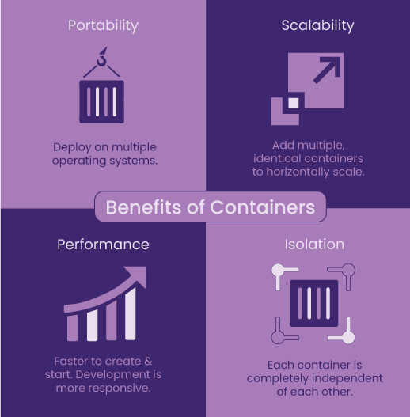Containerized applications can be deployed on multiple operating systems consistently, and can scale horizontally when demands increase. This is because each container is a completely isolated unit, independent of other containers. Additionally, since a container is an executable for the entire runtime environment, it is faster to build and start thereby improving the software development life cycle.
Once the application is packaged into a container and ready to run on any environment, the next challenge is the deployment and management of these containers. What if a container fails in the middle of the night? How does that container get restarted? What if there are multiple containers? The complexity only grows.

Container orchestration manages the complexity of running containers on the cloud. It allows developers to deploy, scale, and secure containers with minimal effort. Container orchestration automates the various tasks required in the container lifecycle including provisioning, networking, configuration, and scheduling as well as allocating resources across containers. There are many container orchestration solutions, including open-source Kubernetes and Amazon Elastic Container Service (ECS).
Although a container orchestration service like ECS automatically attempts to mitigate issues when it detects failures with the underlying host or containers, insight into the system is still required to allow developers to determine when and where problems occur. Observability aims to answer both questions. Observability in the context of containerized applications refers to aggregating data emitted from the applications as well as the hardware they are hosted on into meaningful telemetry data for monitoring and troubleshooting the system’s state. If failure occurs within the system, it would be difficult to pinpoint whether the issue originated from the system itself or within the application code. Without observability, the process of checking the servers and each component would be manual and tedious. Telemetry data could give context to what happened at the time of failure as well as what led up to it.
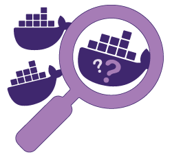Logs, metrics, and traces, often referred to as the three pillars of observability, offer distinctive perspectives on a system's state.
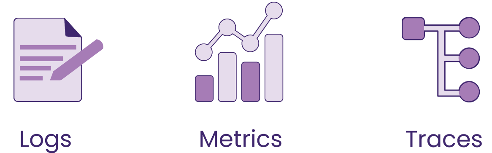Logs are immutable human-readable records of discrete events that happened over some time within an application. Centralized logging consists of collecting all the logs from hardware, cloud infrastructure, and software into one searchable location2.
Logging sheds light on how the system got to its current state. Logs provide context into the events produced by the system, helping to identify what steps led up to failures.
Metrics are numeric values that represent and describe the overall behavior of a service or component measured over time. Because metrics are structured with features that include a timestamp, name, and value, they are easy to query and optimize for storage2.
Metrics allow a user to assess the health of their system by monitoring groups of related quantifiable identifiers so that they can identify which service is malfunctioning.
Traces represent a single request’s journey through different services within the entire application. Traces are composed of spans which encapsulate the start and finish timestamps of each step as well as references to related spans along the way.
Because each trace and span is assigned a unique ID, mapping them together produces the entire lifecycle of a request, helping engineers identify the exact location of problems such as increased latency2.
Observability tools allow for improved visibility, improved alerting, and better problem workflow management. Among these tools, the Cloud Native Computing Foundation’s OpenTelemetry (OTel) project aims to standardize collecting and transmitting telemetry data3.
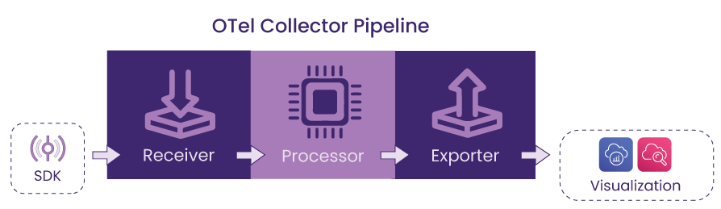The data is processed through the OTel collector which is composed of three main components:
AWS X-Ray and AWS CloudWatch are examples of OTel-compatible backends.
The following section focuses on components required to deploy and manage containerized applications within the AWS ecosystem, beginning with what cloud components are necessary.
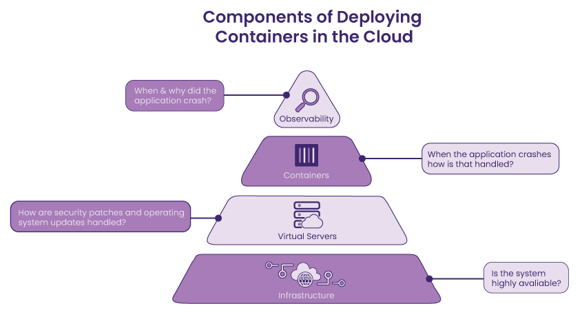In order to deploy a containerized application on the cloud, a cloud environment composed of individually configured networking resources is required. For AWS, one of the leading cloud providers today, the Virtual Private Cloud (VPC) is a logically isolated section of the cloud, in which applications run in a controlled, private, and secure manner.
If the VPC is an isolated section, how does incoming traffic from the internet access this private area of the cloud? An internet gateway is a component responsible for allowing public access into the VPC, and a routing table forwards the traffic to a specific subnet within an Availability Zone (AZ) according to the routing policy associated with the routing table4.
ECS is a fully managed container orchestration service that allows the user to deploy, manage, and scale containerized applications. It can be used to run, stop, and manage containers on a cluster, which is a logical grouping of tasks or services. While ECS controls and maintains workloads that run in a cluster, task definitions are used to specify how the container should launch and include settings for memory and CPU requirements. An ECS service can be configured to automatically run containers and replace tasks upon failure to maintain the desired number of tasks.
Elastic Cloud Compute (EC2) is a virtual server that ECS uses to host containers. Users can choose between managing the EC2 instances themselves or using AWS’ serverless option.

When deploying containers on ECS, there are two launch types – EC2 and Fargate – based on whether the underlying infrastructure management is delegated to AWS. With the EC2 launch type, users have full control over how the servers are configured and managed. It means that users need to be aware of the virtual machine and how containers are distributed on those machines. Conversely, with the Fargate launch type, AWS provisions and manages the servers on behalf of users, hence often referred to as “serverless”.
To set up observability for containerized applications within ECS, there are two options – the sidecar pattern and the ECS service pattern.
With the sidecar pattern each application container is deployed alongside the collector container within a single task. Since the task contains both the application and collector, this pattern is easier to implement because it doesn’t require extra configuration for service discovery. Running a sidecar also gives more visibility, with telemetry data being collected for each particular application container.
The ECS service pattern runs the application container by itself in a task, without a sidecar, and instead the collector container runs within a separate service within the cluster. Since this pattern decouples the application from the collector, this brings down the cost of running double the containers as well as allowing for independent container redeployment when there are updates to either the application or the collector.
Both options have their tradeoffs, but it's common practice to use sidecars to benefit from the full functionality of the collector, scraping telemetry data for application-specific state.
The AWS management console provides comprehensive tooling needed to deploy an application onto a network with cloud infrastructure at varying levels of abstraction. Engineers interacting with the console are provided everything they need to manage their cloud infrastructure with granular control.
The tradeoff is that this process can be tedious as it involves navigation through different interfaces for each service, with each needing its own distinct steps for configuration and deployment. Teardown would be a similar prolonged process as each resource usually has dependencies, requiring the deletion of components in a specific order.
The problem with this method is that often there isn’t a record of exactly how the infrastructure and the services within were configured, making it difficult to accurately duplicate as needed and slowing down the development workflow. Manually deploying to the AWS cloud with the management console can be error-prone and tedious, but automating the process would mitigate these issues.
The purpose of IaC is to enable setting up a complete infrastructure by running a script, eliminating the manual effort of building an entire infrastructure piece by piece. With an IaC tool, users can automate the laborious tasks of managing cloud resources, thereby improving efficiency and maintaining consistency. For example, Terraform, one of the most popular IaC tools, allows users to describe the complete infrastructure for a cloud provider in HashiCorp Configuration Language (HCL). Terraform converts the HCL to the Terraform declarative syntax to communicate with the cloud provider for deploying and managing the resources.
How Terraform decides the order in which resources are created or destroyed depends on the explicit dependencies specified in the HCL file with keywords such as `ref` or `dependsOn` as well as the implicit dependencies that Terraform detects with its dependency tree, visible via `terraform graph` in the Terraform CLI. In addition to Terraform, there are a wide variety of IaC tools including AWS CloudFormation, Azure Resource Manager, Google Cloud Deployment Manager, etc. Although these tools aim to automate the process of infrastructure creation in a more consistent and repeatable way, learning, planning and implementing this method can be time-consuming.
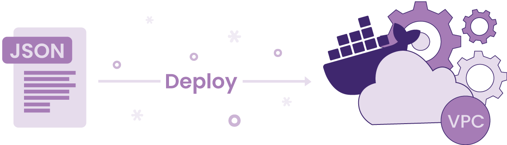AWS Copilot is an opinionated ECS CLI that removes the need for the user to know anything about the underlying AWS network resources or container orchestration for application deployment. Instead, Copilot uses CloudFormation, an AWS IaC tool, to deploy AWS cloud resources and provides those CloudFormation files for the engineer to build off if they want to expand any resources.
Cascade shares similarities with AWS Copilot regarding setting up a user's infrastructure but has notable differences. Cascade provides an instrumentation agent (see Cascade Agent for details) and sets up logs and traces by default. Cascade provides a GUI in which users can deploy their containerized application and view logs and traces with a few clicks. Finally, unlike Copilot, Cascade uses Terraform as an IaC tool.
The following table summarizes how Cascade compares to aforementioned methods for deploying containerized applications in four distinct ways:
Cascade is not for everyone; Cascade was specifically built for users with containerized applications wanting to deploy on ECS Fargate with logging and tracing capabilities. Cascade’s approach enhances similar solutions such as Copilot by providing a GUI as well as built-in observability, minimizing users’ effort in navigating AWS’ comprehensive, yet arguably overwhelming console. In addition, users familiar with Terraform could benefit from Cascade-generated Terraform files as a base to reduce the number of steps compared to a from-scratch IaC deployment approach.
There are three Cascade components – agent, backend, and GUI – that make deployment on ECS Fargate with observability possible.

The Cascade Agent is an npm package for instrumenting users’ applications to allow distributed tracing. It is compatible with AWS Distro for OpenTelemetry (ADOT), an upstream distribution of OTel, which has stable support for tracing with various backend options. To save time, rather than trying to configure which requirements are needed through trial and error, developers could simply install the Cascade Agent to generate and export traces.
The Cascade Backend contains the logic for abstracting the plan and build process of cloud infrastructure required for containerized application deployment. This means that the Backend needs to first receive and organize user inputs from the GUI (discussed more in 6.4), and then use that information to prepare the stacks to deploy.
First of all, the Backend creates a central storage with a Simple Storage Service (S3). An S3 bucket is created for each user in order to store any container information necessary to generate Terraform configuration files required for deployment. Because Cascade supports multi-container deployment, the details for each container are organized into its own sub-directory object within the S3 bucket.
Secondly, Cascade uses Terraform’s CDK as its IaC tool in order to organize the infrastructure components into reusable stacks – Environment and Service – with specific dependencies. The generated Terraform configuration files are stored into the user’s S3 bucket for viewing and downloading. In order to ensure the security of sensitive user data, Cascade-created S3 buckets are configured to be only accessible by the user.
Below is a visual representation of the file structure of a user. Within the root directory, objects are organized into three groups by role – environment-specific objects, container-specific objects, and Terraform config objects.
There are resources separated into an environment stack and a service stack that make up the infrastructure the Cascade Backend generates. Each resource plays a distinct role, whether it is regarding networking, ECS, or observability.
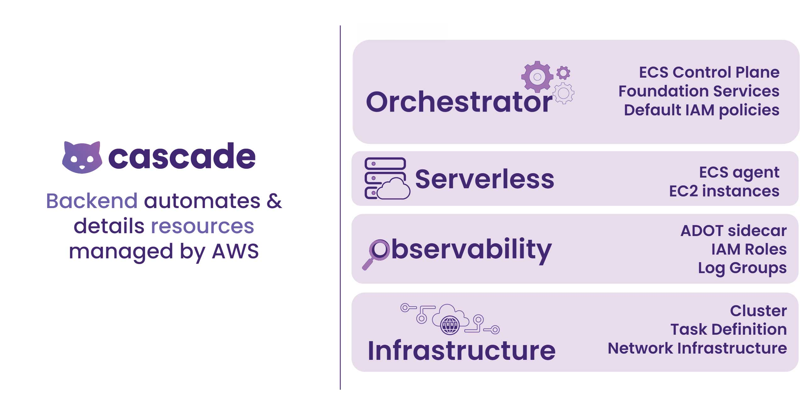When deciding what was needed to deploy containerized applications, our goal was to implement only the essential components required for getting started with the AWS cloud infrastructure. These components include a VPC, an internet gateway, route table, route, route table associations and public subnets.
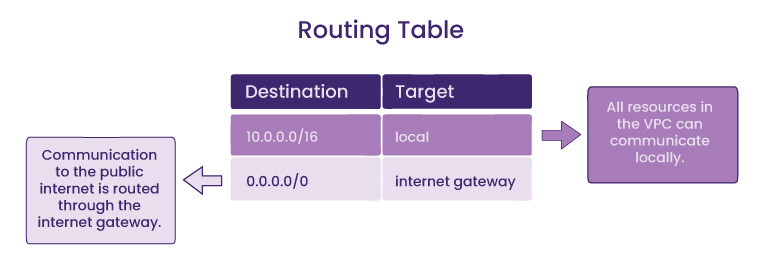While all resources in the VPC can communicate with each other, the communication between the VPC and the internet and other AWS services outside the VPC is facilitated via public subnets with its associated routing table which contains a route to an internet gateway. A subnet is a range of IP addresses; whether it’s public or private depends on its ability to send outbound traffic directly to the internet5. The second route in the routing table above exemplifies the creation of a public subnet by adding a route with the destination of 0.0.0.0/0 and the internet gateway specified as a target.
To follow ECS best practices, we created two public subnets each within its own Availability Zone (AZ), resulting in a total of two AZs. This provides redundancy required for high availability – having multiple AZs avoids a single point of failure because tasks running in the other AZ can still fulfill the demand.
Once the above components are set, if the application running is open to the public, it must accept inbound requests from the internet. One solution is allowing direct communication between the Internet and your public subnet with a public IP address. Instead, we wanted a protective layer that sits between the internet and the application container – a load balancer that opens a connection to the private IP of the container. Since our main focus was public-facing applications, we decided that the most suitable choice was an Application Load Balancer (ALB) because it specifically served HTTP/HTTPs traffic for container-based applications.
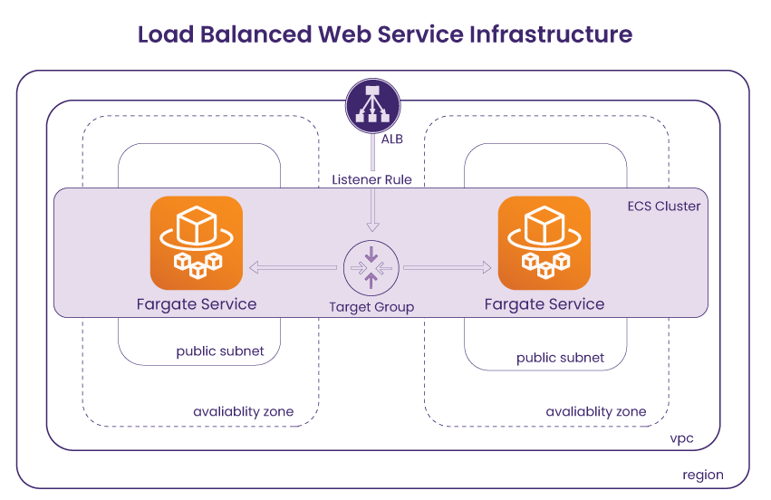Now that the networking resources that serve as the basis of the Cascade infrastructure have been planned out, we can move onto discussing ECS-related resources that are responsible for provisioning users' containerized applications and how they connect to the networking resources. There are three resources that are directly related to the container orchestration on ECS – a task definition, service, and cluster.
A task definition is a blueprint that includes each container's launch configuration, such as Docker image, port mapping, and environment file. In order to spin up the containers, an ECS service must instantiate the associated task definition. An ECS service can run containers automatically and maintain the state of containers by ensuring the minimum number of containers running at all times. In addition, an ECS service takes an optional configuration to be placed behind a load balancer, making connecting our networking pieces to the ECS resources less complex. Finally, an ECS cluster is linked to the aforementioned networking pieces including VPC, so that all containers within the cluster can run on the same environment.
Cascade uses the sidecar pattern to run an AWS Distro for OpenTelemetry (ADOT) Collector – the AWS-supported version of the upstream OpenTelemetry collector for collecting telemetry data – alongside the main container within the same task. This means that by providing the configuration logic within the task definition resource, the Collector can receive traces from the application running in the main container and export them to the X-Ray backend for visualization.
In addition, Cascade creates a log group so that logs generated by the deployed applications are organized by their origin container, and grouped per ECS cluster. This enables viewing logs on AWS CloudWatch.
The Cascade GUI is the main component that users interact with, and it is where users input credentials and container information. The GUI allows users to deploy or destroy AWS infrastructure, without having to directly interact with the AWS console.


When deploying through the GUI, all the implementation details are abstracted away; the user simply adds a few inputs such as their AWS credentials and container information. Since the infrastructure is already preconfigured in the backend the user can deploy the environment with a click of a button. The dashboard displays deployment status of all the resources and gives direct access to CloudWatch logs and X-Ray traces.
In line with our main goal to make the deployment process simple, we wanted to provide an intuitive GUI that serves as a central place for users to prepare, deploy, view, and destroy their containerized applications. We considered implementing a command line interface, however, there were some advantages to implementing a GUI that better met our needs.
We wanted a simple way to get user input for the infrastructure templates. When using the CLI to make requests, a user would have to ensure that there are no missing arguments and no syntax errors; in contrast, with the GUI, it’s easier to visually indicate these issues as well as help the user navigate through the process using images and descriptions.
Once deployed, we wanted an interface for users to be able to view logs, visit their site, view traces, or view Terraform config files with a click of a button.
With Cascade's GUI, the user has a clear, holistic view of containers deployed via the Cascade Dashboard.
One of the first challenges we encountered was working with AWS Identity and Access Management (IAM) roles and policies. IAM is a service that helps administer access to AWS resources, it manages user permissions, roles and policies, allowing granular authorizations on what AWS services and resources are permitted to do.
By default, AWS users start with no permissions. The first step was to determine what permissions were needed for the Cascade workflow. To successfully run our task definitions, we needed Elastic Container Registry (ECR) permissions to pull the collector image and needed access to S3 to retrieve environment variables. Once running, we needed the containers to emit telemetry data to CloudWatch and X-Ray.
After we identified each individual permission required, it was clear that they could be organized into two groups, depending on where each permission is needed in the process of deploying the infrastructure and spinning up the containers post deployment. The permissions related to deployment of the infrastructure, such as S3 and ECR, were grouped into an execution role, whereas the permissions required for running containers after deployment were defined in a task role.
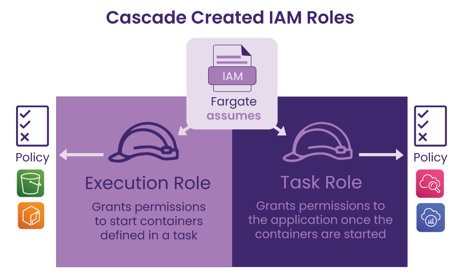The Cascade Backend automatically creates an execution role and task role using Terraform’s CDK along with the other infrastructure resources to make sure each component has the proper permissions to execute correctly. The task execution role grants permissions for pulling images from ECR and allows access to retrieving data from the S3 bucket. Once the containers are running, the task role grants permissions to write logs to CloudWatch and send traces to X-Ray. Ultimately, these two roles are what allows a seamless deployment process for the user.
Because Cascade supports containers including a public-facing service, we created an Application Load Balancer (ALB) that sits inside a public subnet that communicates with a private IP of the application. In order to instruct the ALB to direct traffic to a specified IP address, we created a container-specific target group. Since creating the ALB and the target group doesn’t link them automatically, there needs to be a component that associates the target group to the ALB to establish a proper routing from the ALB to the private IP of the containerized application.
Initially, we considered a target group attachment, which is an AWS resource that provides the ability to register containers with an ALB. However, a target group attachment requires a field for a target identifier, which refers to a container identifier that is generated once the container runs. Because Cascade is designed to deploy the entire infrastructure via two stacks and the containers within are only spun up by an ECS service after the completion of the deployment, container ids were unavailable at the time of defining stacks.
To keep the simplicity of deploying all resources in one go, we chose an alternative way to associate a target group with an ALB – a listener. By defining a listener with a target group Arn and an ALB Arn (Arn is an AWS resource identifier), the rules regarding how an ALB routes requests to its associated targets can be determined prior to deployment along with other resources.
Being able to visually indicate the creation, loading, and destruction phases of each AWS resource was an important component of the Cascade Dashboard, which meant that we needed a way to track the status of an AWS resource as it is being created or destroyed.
We first considered making requests to AWS via the AWS SDK at set intervals, an approach called polling. However, it would not be feasible to require several requests, not only for each of the resources but also repeated requests for the same resource. For a process that could take several minutes, it was highly resource-intensive for the server. In addition, there was a rate-limiting issue; API calls to AWS services can’t exceed the maximum allowed rate per second, which is shared across all resources per account within a region6.
Rather than having Cascade making requests until a change is reflected, why not have AWS send us a message when that resource is created by setting up a webhook? The challenge with this approach is that it requires setting up a webhook for each resource to get updates on the status as well as providing a custom endpoint for each user, which adds more complexity to the status data logic in our backend.
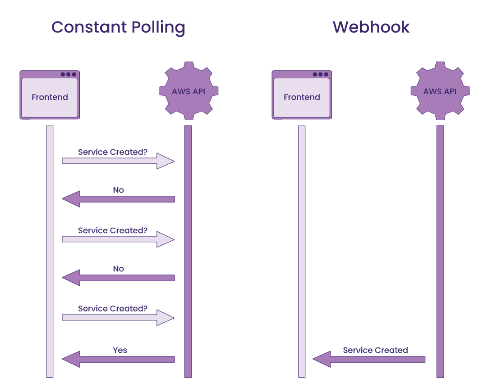Since our backend was already outputting logs of the creation and destruction processes with Terraform commands, we decided to leverage that data via Server-Sent Events (SSE) rather than relying on direct communication with AWS. By opening a connection between the server and the client that persists during the build or teardown process via an EventSource instance, we could have the server send the text data to the client as it is generated. Afterward, the client can detect the resource status by matching two keywords – resource name and Terraform action – to the real-time data.
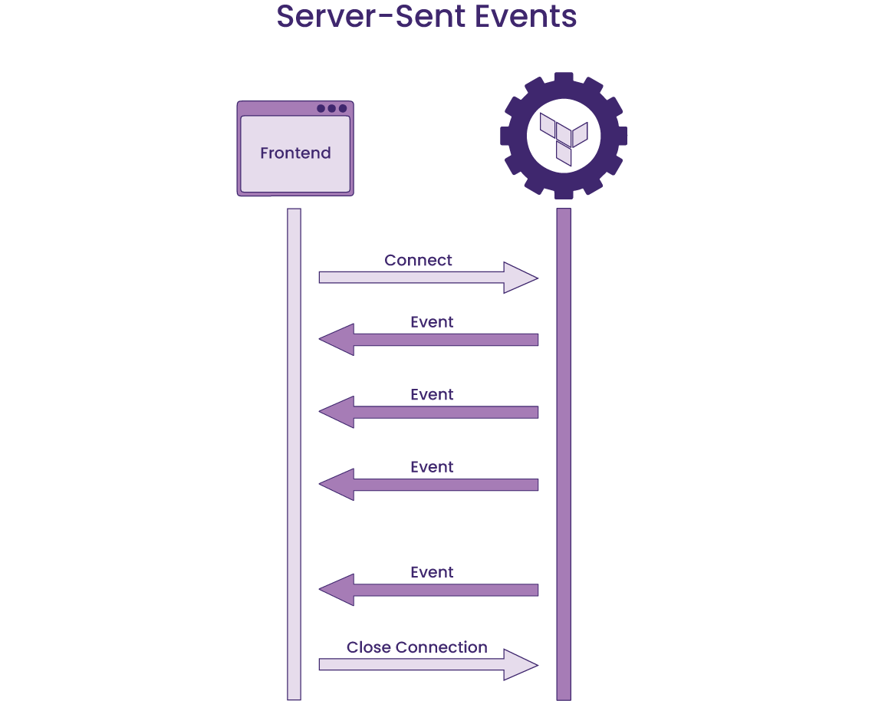Although Cascade fulfills the need to quickly deploy containerized applications, there is always more that can be added to open source projects. Below are a few future work ideas that build on what Cascade currently offers.
Currently, Cascade creates a new VPC and subnets when a user first deploys their infrastructure using our GUI. In the future, we would like to add functionality to support the user’s already existing VPC and subnets.
Currently, users can only view and download the Terraform config files generated by Cascade. Adding support for uploading a Terraform config file and having our backend build that file in addition to our current setup would allow users to redeploy stacks that reflect their custom configurations.
While Cascade GUI currently provides a list of resources for each stack in the order of creation, it lacks a visual representation of the infrastructure. We plan to provide an interactive infrastructure map on the Cascade Dashboard to help users understand the relationships between resources that make up the infrastructure as well as access each resource’s AWS console via clickable components on the map.
https://codersociety.com/blog/articles/metrics-tracing-logging
https://aws.amazon.com/blogs/architecture/one-to-many-evolving-vpc-design/
https://aws.amazon.com/premiumsupport/knowledge-center/elastic-beanstalk-api-throttling-errors/
We are currently looking for opportunities. If you liked what you saw and want to talk more, please reach out!
SF Bay Area, CA
Austin, TX
Chicago, IL
Denver, CO